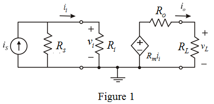
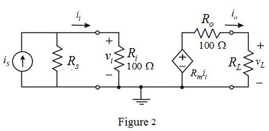

Consider, if  is varied keeping constant, then write the conditions for and .
is varied keeping constant, then write the conditions for and .

Consider the source signal is current and the load signal is voltage. Hence, a current to voltage amplifier is required.
Draw the circuit diagram as shown in Figure 1.

Apply current division rule and determine the value of .
Determine the output voltage.
Consider, if is varied keeping constant, then write the conditions for and .
Calculate the relative change in load voltage.

Consider the value of input resistance,  is of the form
is of the form  .
.
Write the value of input resistance of the form .
Therefore, the value of input resistance is .
Consider, if is varied keepingconstant, then write the conditions for and .
Calculate the relative change in load voltage.
 is .
is .
Consider the value of output resistance,  is of the form
is of the form  .
.
Write the value of output resistance of the form .
Therefore, the value of output resistance is .
Therefore, the amplifier is Trans-resistance amplifier.
Sketch the circuit model.

Determine the intrinsic trans-resistance gain of the circuit.
Therefore, the trans-resistance gain of the amplifier is .